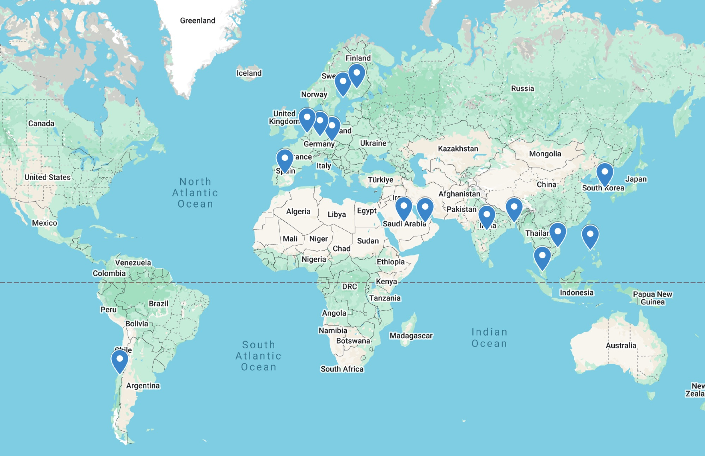
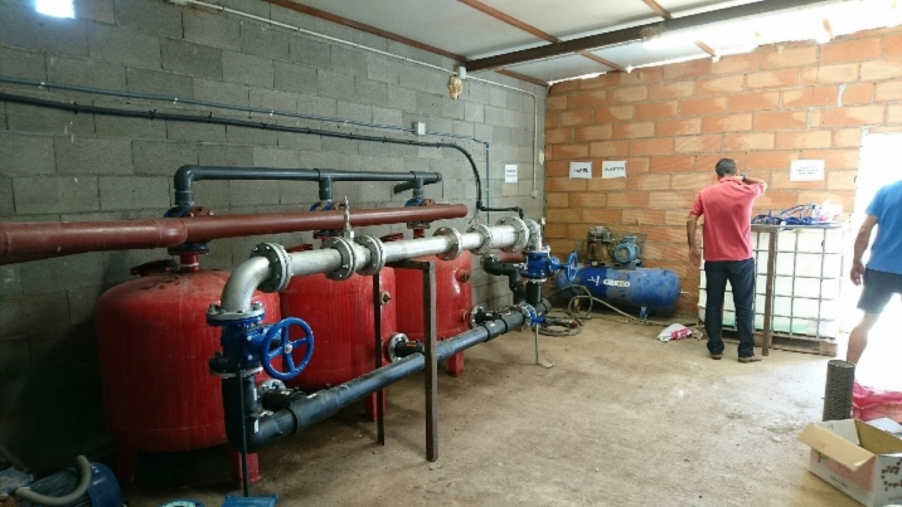
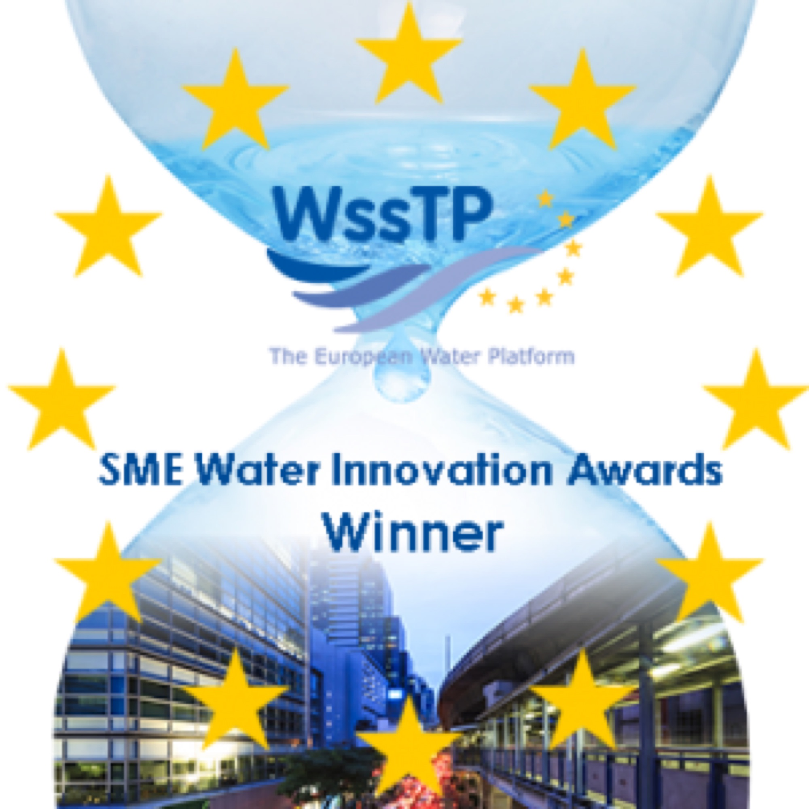
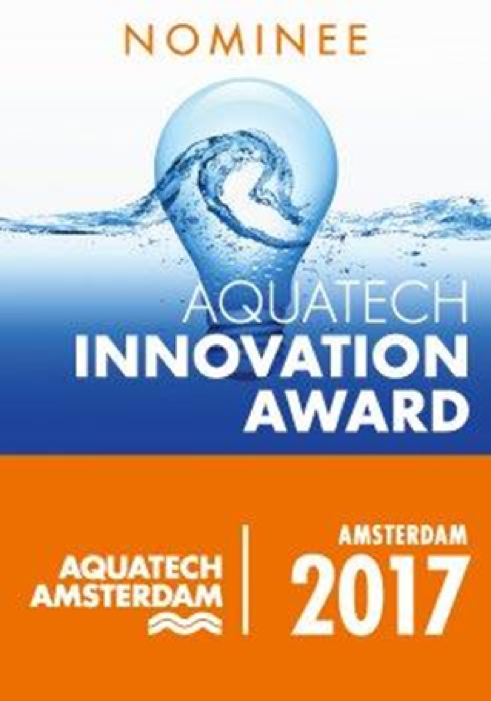

Company structure
One solution. Named capability behind it.
One customer relationship, three named competences behind it. The customer signs for one SansOx solution and can see exactly which company carries which part of the delivery.
The three companies
SansOx Oy
OxTube dissolving units, piping and pumps — the hardware that goes into the line, and the patented treatment technology behind it. Business ID 2467832-6, Lahti, Finland.
SpringNet Solutions Oy
Control software, sensors, automation, data integration and lifecycle support. Provides the measurement layer that turns treatment into compliance evidence — and holds the resulting operating data.
OceanSite Oy
Carbon and restoration credits. Restoration projects and impact verification are the method by which a credit is produced and evidenced.
What the trade register shows
Trade register Two different things get claimed about a group, and only one of them is checkable from a public register. These rows are. You can verify every one of them at the Finnish Patent and Registration Office without asking us for anything.
| Company | Business ID | Registered | Declared line of business |
|---|---|---|---|
| SansOx Oy formerly Happihyrrä Oy |
2467832-6 | 8 May 2012 | Update pending at the trade registry |
| SpringNet Solutions Oy | 3274931-5 | 2 June 2022 | Computer programming (62100) changed to this code 1 January 2026 |
| OceanSite Oy | 3593375-9 | 21 January 2026 | Remediation of soil and water bodies (39000) |
All three are registered at Niemenkatu 73, Lahti Science Park. Source: Finnish Patent and Registration Office open data, read 23 September 2026.
Experience and development
From process technology to monitored, full-service water improvement.
| Period | Milestone |
|---|---|
| 2017–2019 | Savonia UAS verified OxTube ozone disinfection in different water matrices |
| 2019–2021 | Kuopio testing documented pharmaceutical removal in treated municipal wastewater |
| 2023–2026 | Rekilampi oxygenation established an independently monitored restoration reference |
| 2024–2026 | Salo pilot developed PharmOx treatment with Savonia UAS and THL involvement |
| 2026 | Smart monitoring and restoration services expanded the SansOx delivery model |
About 70 water improvement sites reported worldwide.
Selected customers and deployment locations
Company-reported The company's reference list runs to about 70 sites. A selection of customer names from it: Helen, Fortum, Fazer, Kokkola Industrial Park, UPM Kymi and Rauma, Outokumpu, RAG (Germany), Tata (India), Charm and Colormatch (Bangladesh, textiles), Biovision (Malaysia, palm oil), Residum (landfill leachate) and Iisalmen Vesi. [Names shown in this draft only — which of them may be published is still being confirmed.]

Installation and pilot locations. The map shows countries, not the full site list.

Municipal pumping station, the Philippines — one of six radon-removal installations delivered with Unique Water.
Recognition

WssTP SME Water Innovation Awards — Winner (2014)
Aquatech Innovation Award 2017 — Nominee, not winnerOutside Finland
The figure of about 70 sites is the company’s own. These three are the ones it can name, with the partner named too.
| Site | What was done | Reported outcome | Source |
|---|---|---|---|
| Philippines with Unique Water |
Radon removal at six municipal pumping stations. RadOx installs into the station — no basin added. | Each installation meets the Philippine drinking-water limit of 11 Bq/l, stricter than the EU parametric value of 100 Bq/l (Directive 2013/51/Euratom). | Company-reported |
| Sukhrali, India with Elixiir, Haryana |
Untreated inflow stopped, banks cleaned, water pumped through OxTubes, enzyme treatment floated bottom solids for collection. | Pond treated and kept clear under a maintenance contract still in force. No quantified figures — dissolved oxygen and clarity data have not been supplied by the partner, so none are stated. | Company-reported |
| Carelian Caviar Finland, aquaculture |
Ozone dissolved into process water to eliminate bacteria and viruses without chemical residues. | Theoretical maximum concentration reached in three seconds in the farm installation and one second in the laboratory; concentration stable for at least four weeks in laboratory conditions. | Manufacturer document |
Selected Finnish references
| Site | Category | Application |
|---|---|---|
| Siuntio | Drinking water | Resident supply purification application |
| Puulavesi | Drinking water | Purification for residents in the Lake Puula area |
| Kuopio | Municipal wastewater | OxTube ozone testing for pharmaceuticals and chemicals |
| Salo | Municipal wastewater | PharmOx pilot on treated discharge water |
| Rekilampi | Water-body restoration | Deep-zone oxygenation with independent monitoring |
Technical reference packages can combine process diagrams, sampling plans, laboratory results and operating data.
People behind the delivery
Trade register Board membership is public record in Finland. These are the people named against the group's companies, not a curated team page.
| Name | Role | Company | Since |
|---|---|---|---|
| Ari Pekka Bäck | Chairman of the board | SpringNet Solutions Oy | June 2022 |
| Aarno Mikael Seppälä | Board member | SpringNet Solutions Oy | January 2026 |
| Jukka Sakari Hakola | Board member | SpringNet Solutions Oy | January 2026 |
Source: Suomen Asiakastieto, SpringNet Solutions Oy (3274931-5), read 23 September 2026. This lists SpringNet's board, not SansOx's or OceanSite's — those have not been checked against the same register.
Ask which company signs for what.
In a municipal or industrial procurement that question decides the deal. We answer it in writing before the pilot starts.
Define a pilot